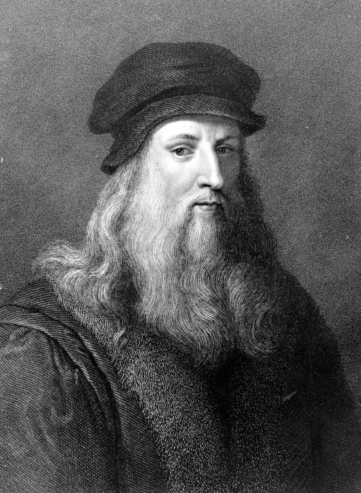
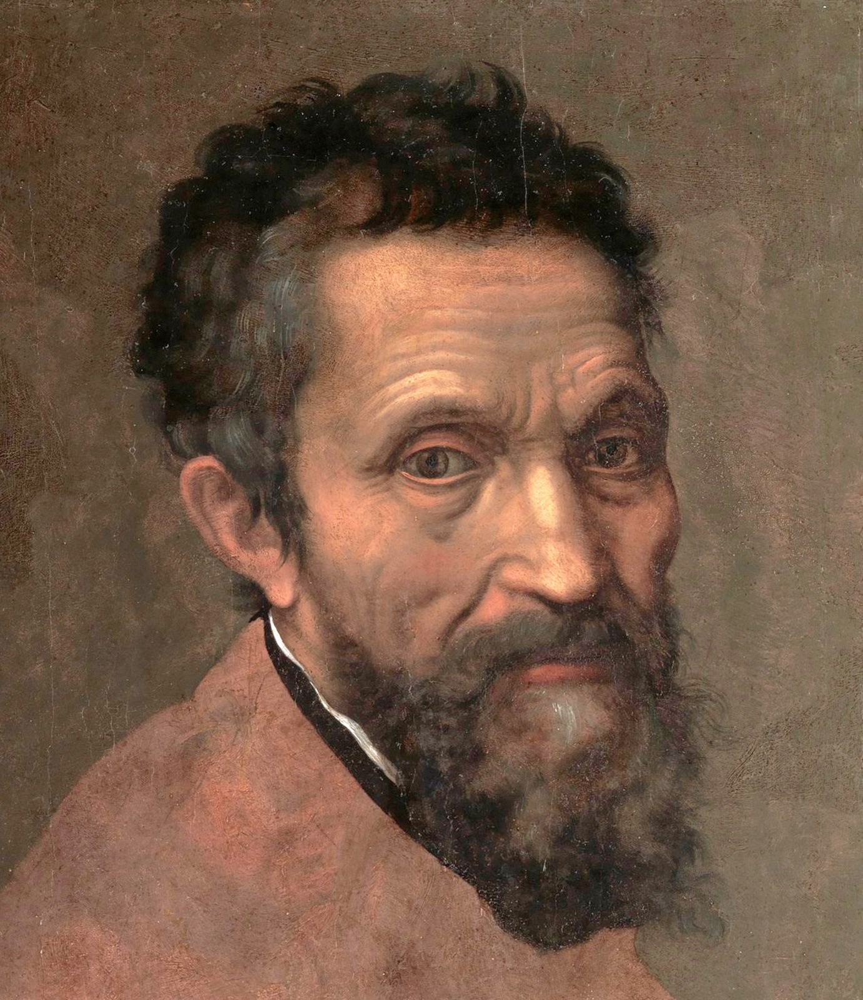
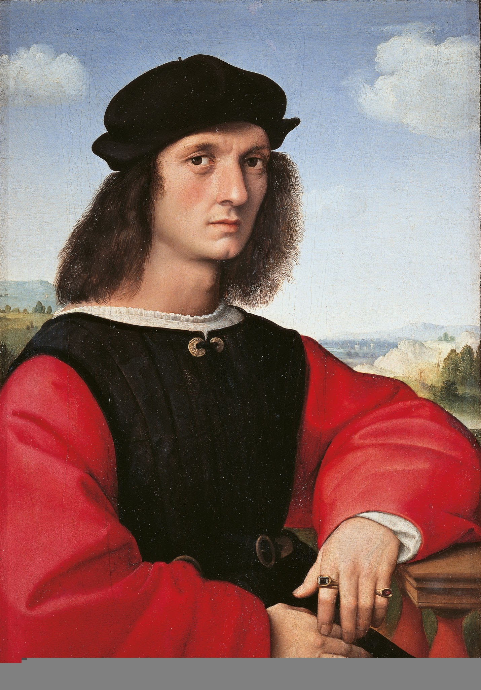
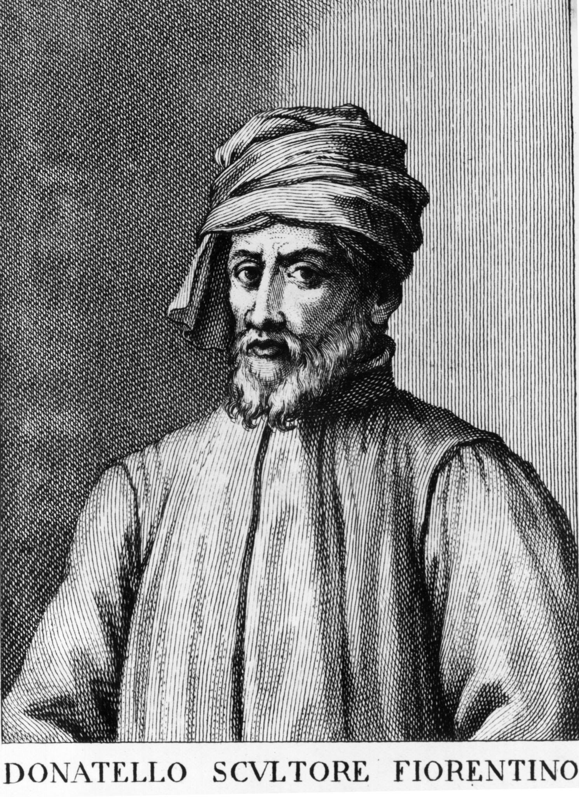
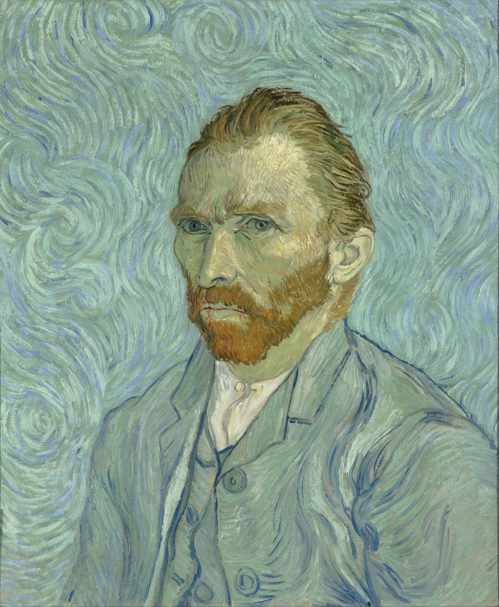
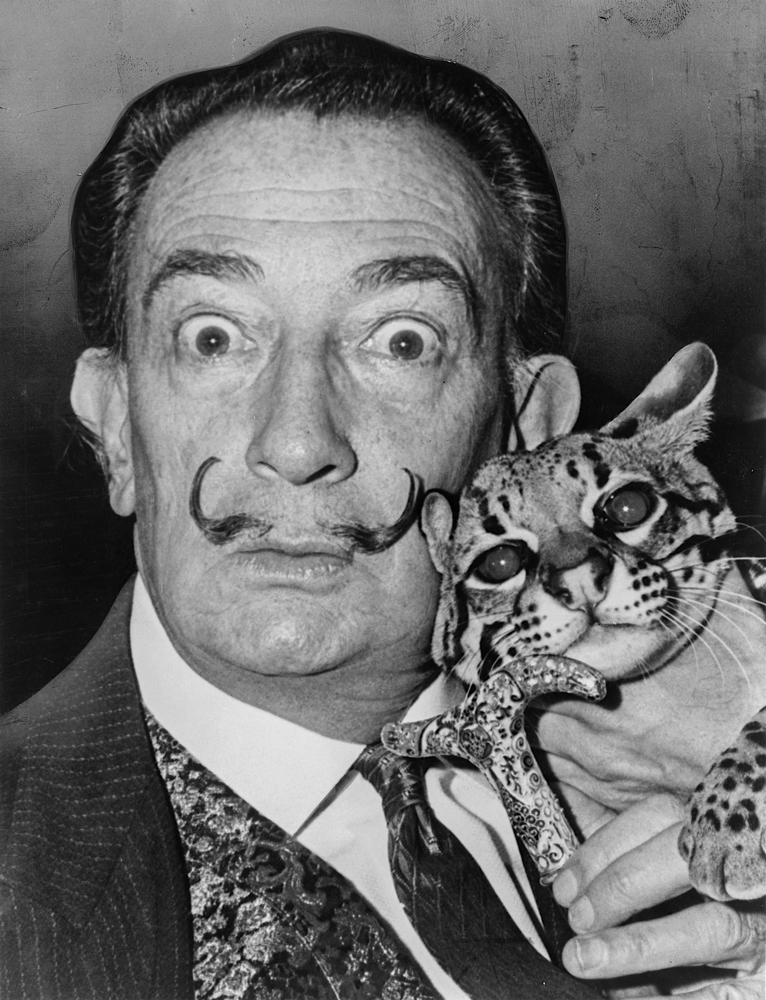
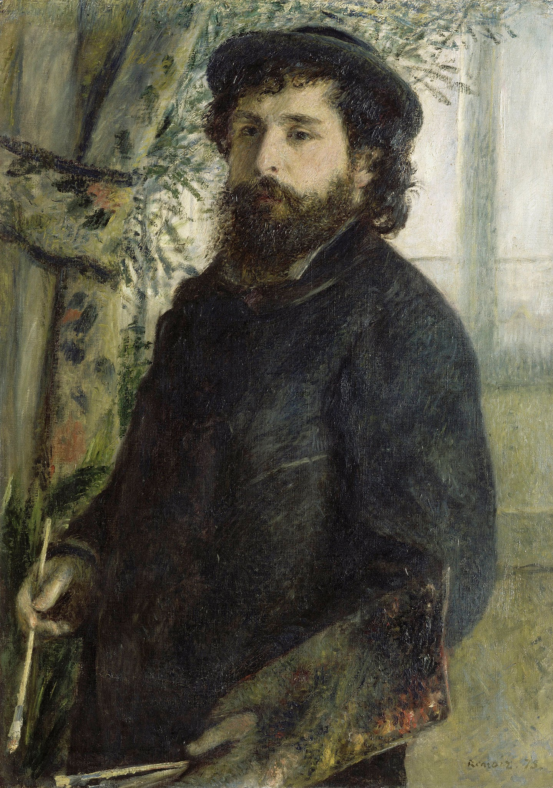
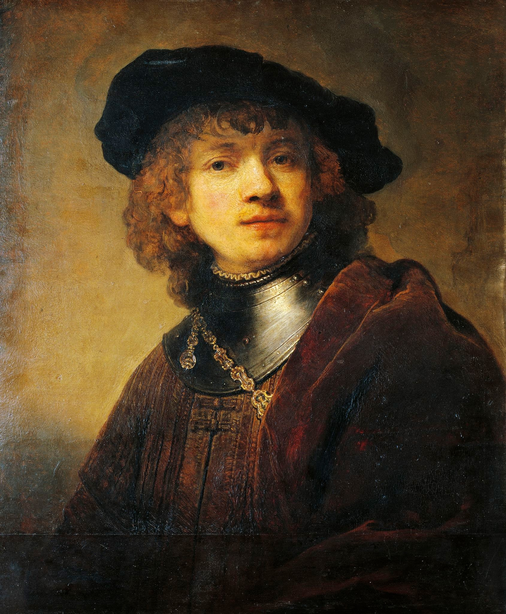

| Name | Picture | Born | Famous Art Work | Medium | Education | Number of Siblings | Period |
|---|---|---|---|---|---|---|---|
| Leonardo da Vinci |  | Anchiano, Tuscany(now Italy) | Mona Lisa | Oils | University of Florence | 12 | High Renaissance |
| Michelangelo |  | Caprese Michelangelo, Italy | The Statue of David | Carrara marble | Florence's Humanist Academe | 4 | High Renaissance |
| Raphael |  | Urbino, Italy | The School of Athens | Fresco Painting | Taught by Father and Later Perugino | 0 | Renaissance Humanism |
| Donatello |  | Florence, Italy | Bronze David | Bronze Cast Sculpture | Teacher Lorenzo Ghiberti | 1 | Renaissance Period |
| Vincent van Gogh |  | Zundert, Netherlands | Starry Night | Oil | Brussels Academy | 5 | Realism |
| Salvador Dalí |  | Figueres, Spain | The Persistence of Memory | Oil on Canvas | San Fernando Fine Art Royal Academy | 2 | Surrealism, Expressionism |
| Claude Monet |  | Rue Laffitte, Paris, France | Water-Lilies | Oil Paint | Learned from Other Artists | 1 | Impressionism |
| Rembrandt |  | Leiden, Netherlands | the Night Watch | Oil Paint | Leiden University | 6 | Baroque painter |